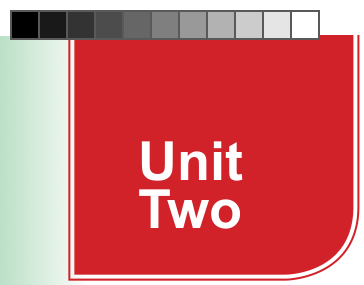

Unit Two
Expressing quantity
Introduction
Some words are used to express the quantity of something. In this unit, you will learn to use ‘much’, ‘many’, ‘some’, and ‘any’ to express the quantity of something in positive and negative sentences. You will also use them to ask and respond to questions in telling quantity of something. The competencies developed will enable you to communicate effectively in shopping, cooking, and daily interactions.

Think about the words you use to talk about amount of things
Activity 2.1: Expressing quantity using ‘many’ and ‘much’
(a) Study the following sentences paying attention to the word ‘many’.
- 1. There are many oranges in the basket.
- 2. Many people attended Halima’s birthday.
- 3. There were many animals on his farm.
(b) Study the following sentences paying attention to the word ‘much’.
- 1. We don’t have much money.
- 2. There is too much salt in the stew.
- 3. Business people do not have much time for fun.